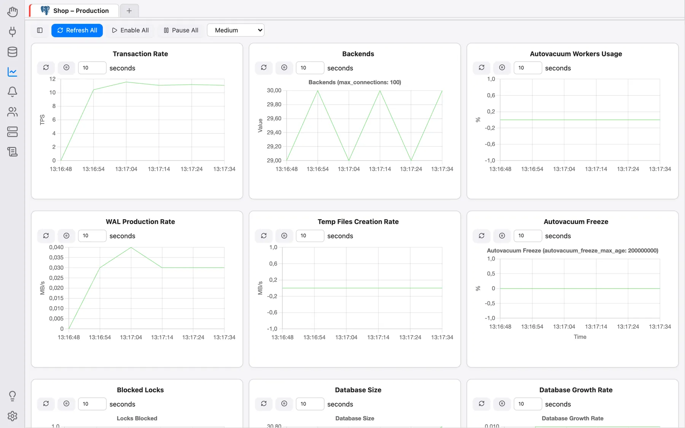
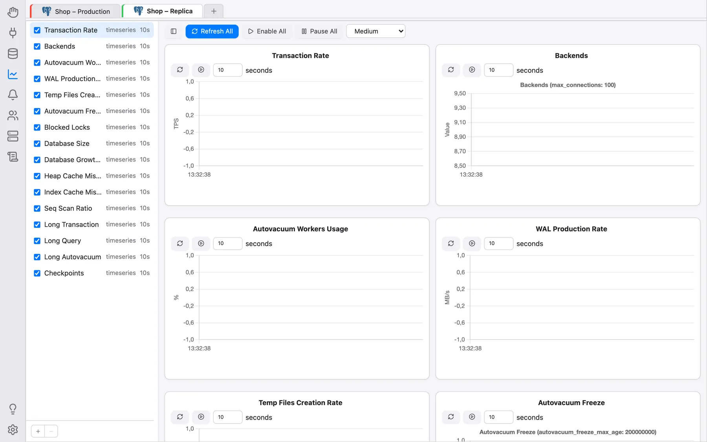

Tableau de bord de supervision
La section Supervision est un tableau de bord en direct composé de graphiques et de grilles pour le serveur situé derrière une connexion — taux de transactions, processus serveur, production de WAL, taille des bases de données, taux de réussite du cache et plus encore — construit à partir de petites cartes indépendantes appelées unités de supervision. Outre les unités fournies avec OmniDB, vous pouvez écrire les vôtres, chacune sous la forme d’une unique requête SQL.
Des unités intégrées existent pour PostgreSQL (16 unités) et MySQL (1 unité, Thread Count). Les connexions MariaDB et Oracle disposent elles aussi du tableau de bord, pour vos propres unités personnalisées. Pour les autres moteurs, la section affiche La supervision n’est pas prise en charge pour les connexions ….
Ouvrir le tableau de bord
Cliquez sur l’icône Supervision dans la barre de navigation de gauche (entre Base de données et Notifications). Le tableau de bord appartient à une connexion ouverte dans la section Base de données : la bande des onglets de connexion ouverts est affichée en haut de la section, et la sélection d’un onglet affiche le tableau de bord de cette connexion. Si aucune connexion n’est ouverte, elle affiche Aucune connexion ouverte.
Toutes les unités démarrent en pause au chargement du tableau de bord, si bien que son ouverture ne lance pas à elle seule d’interrogation du serveur. Démarrez celles que vous voulez avec leur propre bouton de lecture, ou toutes à la fois avec Tout activer.

La barre d’outils
La barre d’outils en haut reste en place pendant que les cartes défilent en dessous :
- le premier bouton, une simple icône (info-bulle Gérer les unités), ouvre ou ferme le panneau latéral de la liste des unités, décrit ci-dessous ;
- Tout actualiser actualise une fois chaque unité affichée ;
- Tout activer / Tout mettre en pause démarrent ou arrêtent l’actualisation automatique de toutes les unités de cette connexion ;
- Taille des cartes — Petite, Moyenne, Grande ou Pleine largeur — définit la largeur maximale d’une carte avant que la grille ne passe à moins de colonnes : une fenêtre étroite affiche une carte par ligne, un écran large plusieurs côte à côte. Ce choix est mémorisé dans votre navigateur.
Une carte d’unité de supervision
Chaque carte comporte son titre en haut, un × qui retire (masque) l’unité du tableau de bord et — pour vos propres unités personnalisées — un bouton de modification qui ouvre son éditeur (tous deux apparaissent au survol de la carte). Sous le titre se trouvent les commandes de l’unité : actualiser maintenant, pause / lecture, et l’intervalle d’actualisation en secondes. Le reste de la carte est occupé par le graphique ou la grille de l’unité.
Une unité est de l’un des trois types suivants :
- Grille : exécute sa requête à chaque actualisation et affiche le résultat dans une grille de données.
- Graphique (sans ajout) : redessine un graphique complet à chaque actualisation ; les valeurs précédentes sont remplacées. Idéal pour les graphiques circulaires ou en anneau représentant un état actuel.
- Série temporelle : ajoute un nouveau jeu de valeurs à son graphique à chaque actualisation, en conservant les points les plus récents, ce qui permet de suivre l’évolution d’une valeur dans le temps. Toutes les unités intégrées sont des séries temporelles.
Gérer les unités
Le panneau latéral Gérer les unités (affiché ou masqué par le premier bouton de la barre d’outils, et redimensionnable en faisant glisser son bord) liste toutes les unités disponibles pour la connexion :
- la case à cocher devant une unité l’affiche ou la masque sur le tableau de bord (la masquer l’arrête, comme le × de sa carte, mais conserve son intervalle d’actualisation pour la prochaine fois) ;
- faites glisser une ligne vers le haut ou vers le bas pour changer l’ordre des cartes sur le tableau de bord ;
- le + sous la liste ouvre l’éditeur Nouvelle unité ;
- pour une unité personnalisée, clic droit → Modifier ou Supprimer, ou double-clic pour ouvrir son éditeur. Les unités intégrées ne peuvent être ni modifiées ni supprimées, seulement affichées ou masquées.
Vos unités personnalisées sont privées à votre utilisateur OmniDB.

Unités intégrées
PostgreSQL : Transaction Rate, Backends, Autovacuum Workers Usage, WAL Production Rate, Temp Files Creation Rate, Autovacuum Freeze, Blocked Locks, Database Size, Database Growth Rate, Heap Cache Miss Ratio, Index Cache Miss Ratio, Seq Scan Ratio, Long Transaction, Long Query, Long Autovacuum et Checkpoints. MySQL : Thread Count. Elles ne nécessitent rien de supplémentaire à installer dans la base de données.
Écrire des unités de supervision personnalisées
Une unité personnalisée est une unique requête SQL exécutée selon une minuterie — avec la même connexion et les mêmes permissions que votre éditeur SQL. Il n’y a pas de langage de script séparé à apprendre.
Remarque : comme la requête se réexécute sans surveillance, seules les requêtes SELECT (ou
WITH ... SELECT) sont acceptées — une instruction destructrice collée par erreur
est rejetée d’emblée plutôt que de s’exécuter silencieusement à intervalles réguliers.
Cliquez sur + dans le panneau Gérer les unités. Un onglet d’édition Unité de supervision s’ouvre avec les champs Nom, Type (Série temporelle, Graphique (sans ajout) ou Grille), Intervalle d’actualisation (en secondes), Modèle (pour partir éventuellement d’une unité existante), Type de graphique (Barres, Circulaire, Anneau ou Lignes ; affiché uniquement pour Graphique (sans ajout)) et l’éditeur Requête SQL.
La forme de la requête dépend du type de l’unité :
-
Grille : aucune forme particulière — quelles que soient les colonnes et lignes renvoyées par la requête, elles deviennent la grille. Par exemple :
SELECT * FROM pg_stat_activity -
Graphique (sans ajout) : une ligne par catégorie — la première colonne est l’étiquette, la ou les colonnes restantes forment chacune une série (le nom de la colonne devient le nom de la série). Par exemple, un graphique circulaire de la taille des bases de données :
SELECT datname, round(pg_catalog.pg_database_size(datname) / 1048576.0, 2) AS size_mb FROM pg_catalog.pg_database WHERE datname NOT IN ('template0', 'template1') -
Série temporelle : exactement une ligne — chaque colonne numérique devient une série alimentée en continu. Par exemple, pour suivre la taille totale des bases de données au fil du temps :
SELECT round(sum(pg_catalog.pg_database_size(datname)) / 1048576.0, 2) AS total_size_mb FROM pg_catalog.pg_database WHERE NOT datistemplate
Cliquez sur Tester pour exécuter la requête une fois et voir le résultat s’afficher sous l’éditeur — autant de fois que vous le souhaitez. Une fois satisfait, donnez un nom à l’unité, définissez l’intervalle d’actualisation et cliquez sur Enregistrer. L’unité apparaît alors dans la liste Gérer les unités ; cochez-la pour l’afficher sur le tableau de bord.